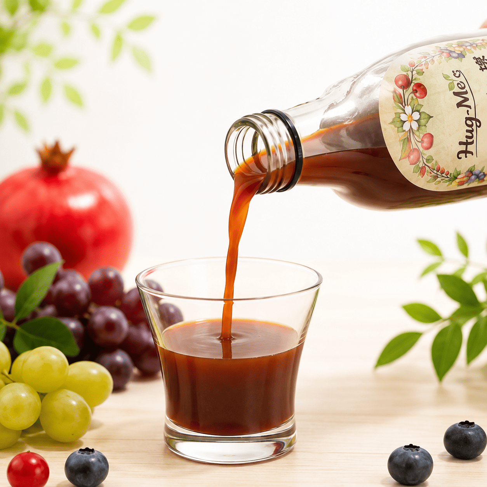

100種類以上の
植物素材
野菜、果物、穀類、海藻、和漢素材など、多彩な自然の恵みをひとつに。
Natural Fermented Drink
A Small Daily Ritual
忙しい毎日の中でも、内側から整える時間をつくってほしい。 はぐみ酵素は、植物の恵みをじっくり発酵させ、続けやすい一杯にしました。

FEATURE04
野菜、果物、穀類、海藻、和漢素材など、多彩な自然の恵みをひとつに。
長い年月をかけて継承・培養してきた種菌で、素材をじっくり発酵。
麹菌を使い、さまざまな植物素材を丁寧に発酵しています。
植物由来の素材を中心に、日々の食生活へ取り入れやすく仕上げました。
How to Enjoy
そのままはもちろん、水やぬるま湯、炭酸水で割ったり、 ヨーグルトにかけたり。暮らしに合う方法でお楽しみください。
パウチなら
1日1包
LINEUP02
Pouch Type
Bottle Type
Fermentation Design
長期間の微生物発酵は、原料中の高分子タンパク質や多糖類を、 より小さな構成単位に近い形へ変えるプロセスとして知られています。 はぐみ酵素では、長期熟成による低分子化と発酵代謝産物の蓄積を設計の中心に置いています。
有機酸や菌体成分など、発酵によって生まれる要素に着目しています。
イソマルトオリゴ糖とフラクトオリゴ糖を組み合わせています。
植物素材を発酵させ、日常に取り入れやすい飲料として設計しています。
じゃがいも、玄米、黒豆、小豆、果実類、野菜類、野草、菌類、海藻類など。
発芽玄米、ハトムギ、高麗人参、メシマコブ、レイシなどの植物素材。
イソマルトオリゴ糖、フラクトオリゴ糖、麦芽水飴、黒糖など。
原材料の詳細は、各商品のパッケージ表示もあわせてご確認ください。